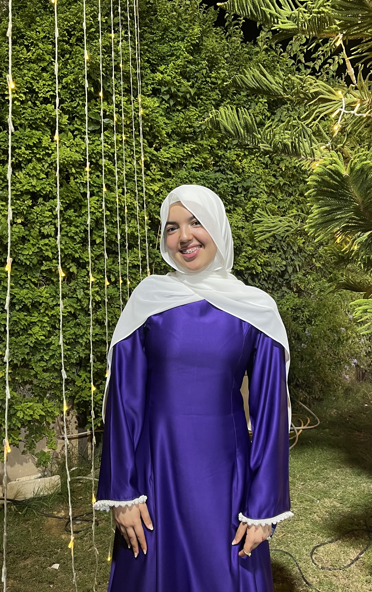

Stage de perfectionnement – SagemCom
2025
Participation à un projet de climatisation à distance.

Étudiante en 2e année systèmes embarqués, ISET Radès
Je conçois des objets connectés autour des cartes ESP8266 et ESP32, du capteur jusqu'au code. Curieuse et sérieuse, j'aime travailler en équipe et je cherche un stage ou un premier poste en systèmes embarqués et IoT.
2025
Participation à un projet de climatisation à distance.
2025
Découverte du milieu industriel et des systèmes embarqués. Observation des procédés de production et de sécurité.
Juillet 2026
Accueil et service à la clientèle au guichet de l'espace Tunisie Telecom.
2024 – 2025
Projet de l'année : détection de gaz dans une maison avec un système IoT.
2025 – 2026
Projet de l'année : système intelligent de gestion d'embarquement et de débarquement.
Certification
Certificat complémentaire en électronique.
Système qui surveille l'air d'une maison et signale la présence de gaz, construit autour d'une carte ESP8266 et de capteurs.
Projet de deuxième année en systèmes embarqués : un système qui gère les entrées et les sorties de manière automatique.
Écris-moi, ou retrouve mon travail en ligne. Les liens s'ouvrent dans un nouvel onglet.
Centres d'intérêt : nouvelles technologies, robotique, électronique.